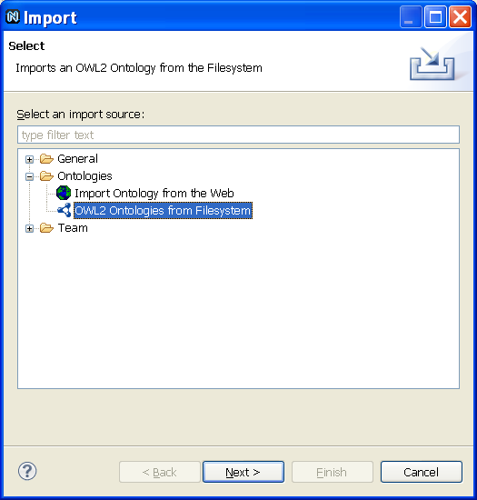
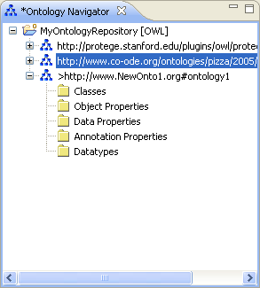

How to load an ontology?
To load an ontology into the NeOn Toolkit, proceed as follows:
- Select an ontology project.
- Import an ontology.
Right-click the ontology project and select Import. The New Ontology dialog opens.
- Select an import source.
Locate the folder "Ontologies" and select an import source.
You can choose between the following import methods:
- Filesystem. Import an OWL2 ontology from the filesystem.
- The Web. Import an ontology directly from the Web.

- Enter appropriate information.
In case you select the Web import a dialog appears which lets you choose an OWL project to import into
and lets you enter the URL of the ontology to load.
In case you select the file system import another dialog appears which lets you
enter the following information:
- To Project. Select the project to which you want to import the ontology.
- From File. Select the file you want to import. Its best to use the "Browse" button which lets
you select the file from your file system with a file chooser dialog.
The file chooser also allows for selecting multiple ontologies at the same time using the Shift and CTRL keys.
This is a handy mechanism to load ontologies into the NeOn Toolkit which import each other and should not be fetched
from the web.
- Click Finish.
After returning from the file chooser click on the "Finish" button to load the selected ontology.
To not load it, click "Cancel".

Note –
When the loaded ontology uses owl:import statements to import other ontologies, they will
also be fetched by this mechanism and loaded into memory. If an ontology with the requested ID
already exists in the project it will not be fetched again.